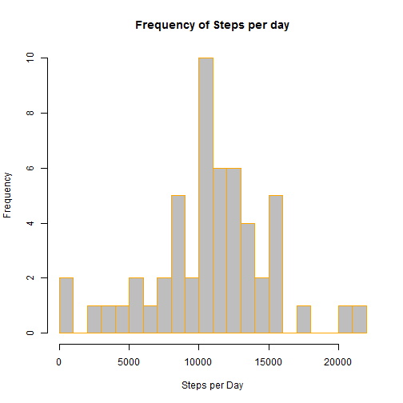

Raw_data<-read.csv("./data/activity.csv",header=TRUE, sep=",")
Value_data<-subset(Raw_data, !is.na(Raw_data))
Sum_day_data<-aggregate(steps~date, data=Value_data, sum)
hist(Sum_day_data$steps, main="Frequency of Steps per day", xlab="Steps per Day", border="orange", col="grey",breaks = 20)

Mean_day_steps<-mean(Sum_day_data$steps)
Median_day_steps<-median(Sum_day_data$steps)
Avg_5min_steps<-aggregate(steps~interval, data=Value_data, mean)
plot(Avg_5min_steps$interval,Avg_5min_steps$steps, type="l",col="blue", main="steps per 5 minute interval",ylab="Steps",xlab="Interval")
Max_interval_steps <- Avg_5min_steps$interval[which.max(Avg_5min_steps$steps)]
Num_nas_dataset<-length(which(is.na(Raw_data)))
Imputed_data <-merge(Raw_data, Avg_5min_steps,by="interval")
Nas_data<-which(is.na(Imputed_data$steps.x))
Imputed_data$steps.x[Nas_data]<-Imputed_data$steps.y[Nas_data]
Sum_day_newdata<-aggregate(steps.x~date, data=Imputed_data, sum)
hist(Sum_day_newdata$steps.x, main="Frequency of Steps per day", xlab="Steps per Day", border="blue", col="grey",breaks = 20)
Mean_steps_new<-mean(Sum_day_newdata$steps.x)
Median_steps_new<-median(Sum_day_newdata$steps.x)
Imputed_data$dateType <- ifelse(as.POSIXlt(Imputed_data$date)$wday %in% c(0,6),'weekend','weekday')
Avg_steps_dateType <- aggregate(steps.x ~ interval + dateType,data = Imputed_data,mean)
ggplot(Avg_steps_dateType,aes(interval,steps.x))+
geom_line(col="blue")+
facet_grid(dateType~.)+
xlab("5-minute interval")+
ylab("avarage number of steps")